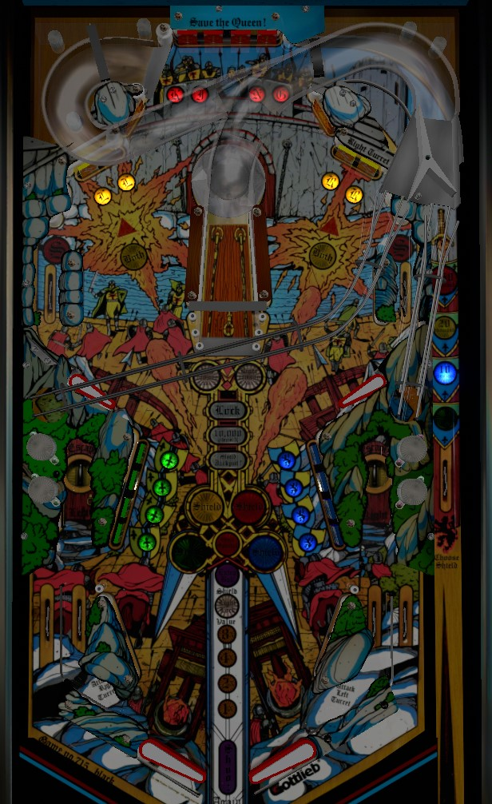

The plunge determines which colour drop target bank must be completed to light a lock for multiball at the center ramp. Green and blue are the easiest to select and the easiest to complete, but give very few points; red is by far the hardest, but awards a 250,000 point skill shot. Clear all flashing bank(s) of targets then make a full shot to the center ramp to start multiball. In multiball, keep shooting ramps for 100,000 each or clear all target banks for extra ball/special/500,000. After multiball ends, hit the drop target lit by a fast moving light to score the progressive jackpot.
The skill shot is timing-based and determines which bank of drop targets must be completed to play multiball for the first time on that ball in play. The selected colour is based on which colour is lit when the plunged ball first triggers the rollover switch in the shooter lane. The game automatically cycles through the four colours, going in the order green, blue, yellow, red; each colour is lit for less time than the previous one, with red only being available for about 1/10th of a second before switching back to green. Selecting green scores 5,000 points; selecting blue scores 10,000; selecting yellow scores 20,000; selecting red scores 250,000 points.
The timing of the skill shot works the same for the plunge that starts multiball immediately after a ball is locked. In this case, there is no importance to the selected colour other than the score associated with it.
Any drop target down scores 5,000 points and adds the value of 1,000 times the current multiplier into both the progressive jackpot and the end-of-ball bonus. The multiplier starts at 1x every ball and increases by 1 every time a bank of drop targets is completed, or every time the center ramp is made during multiball. Completing the red drop targets in the back of the game advances the multiplier 2 times instead of 1. Max multiplier is 15x.
All green and blue drop targets can be hit with either lower flipper. Yellow drop targets can be hit with a lower flipper forehand shot or an upper flipper backhand shot. Red drop targets require direct shots with upper flippers, or ricochets and pop bumper luck.
Completing all of the flashing banks of drop targets lights the center ramp to lock a ball and start 2-ball multiball. For the first multiball on a single ball, 1 colour will be flashing, and it will be the colour chosen on the skill shot at the start of the turn. For the second, third, and fourth-or-more multiballs, there will be 2, 3, or all 4 colours flashing; the 2 or 3 chosen colours appear to be completely random. Once the center ramp is lit for Lock, shoot the center ramp, and a ball will be locked regardless of which saucer the ball is diverted to. Multiball starts as soon as the second ball enters the playfield.
There are two multiball-specific scoring features.
First, there is a bonus for completing all 4 banks of drop targets before multiball ends; this scores an extra ball the first time it is done on a ball, or a Special if it is done more than once on a ball. Extra balls and specials both score 500,000 points in competition/novelty play.
The second multiball feature is that the center ramp is always lit for 100,000 points and a multiplier advance for as long as there are 2 balls in play, which can help accelerate the rate at which the jackpot and the end-of-ball bonus grow. The 100,000 point ramp value is in addition to the 25,000 that is normally given whenever a side saucer is activated.
The jackpot starts at 100,000 points and increases by 1,000 points times the current multiplier every time any drop target is knocked down. The jackpot also instantly increases by 100,000 if any ball goes down either out lane. The jackpot builds across players and games, and is only reset back to 100,000 if it is collected or if the whole machine is powered off. The highest I have seen the jackpot get is around 850,000 points; it's not too hard to collect. There is no setting, factory or fanmade, that gives each player their own jackpot; it's always a shared, progressive value.
The jackpot can only be earned during the jackpot round, which does not happen during multiball; it is a timed round that starts immediately after one ball drains and single ball play resumes. During the jackpot round, one target will be it for 15 seconds; the lit target very quickly moves around the table, appearing in front of all 16 targets in a clockwise order. Hit the target that is lit to score the jackpot. Drop targets are not re-raised at any point during this progress until a whole bank is completed, so the light may (briefly) appear in front of a drop target that is already down. The easiest way to score the jackpot is to get the ball trapped on one flipper and backhand the ball into the nearest available green or blue drop target as the moving light comes close by. If the jackpot is collected, or if about 15 seconds pass, the jackpot round ends and you can begin working toward qualifying a lock and multiball again. If the lone ball in play drains during the jackpot round, it is lost, and the next ball in play will begin with a colour selection skill shot.
If a player has not played multiball when their final turn of the game begins, the ramp will be lit for lock right away, without needing to complete any drop target banks. In this case, a full plunge that ends up in one of the side saucers starts an instant multiball.
The center ramp can be lit for one other feature during single ball play: "10,000 x Multiplier". This does exactly what it says, with scoring based on the multiplier built up by completing drop targets. This feature is lit at the start of the ball and seems to unlight whenever it is scored; other than that, I have not been able to figure out exactly what causes this to unlight and relight.
There are no switches on the center ramp itself, so the game doesn't know if a full center ramp shot was scored, and the awards are given when one of the side saucers is activated. There are two sneaky ways to take advantage of this:
Except for the very rare cases when weak flippers make a full shot to the center ramp impossible, these techniques should be considered nothing more than happy accidents or party tricks.
Immediately after rolling through either in lane, the two yellow drop targets in the opposite upper corner of the table will start flashing the "Both" insert in front of them. Hitting both targets down at the same time will cause the Both insert to be solidly lit. Lighting the Both insert on both sides of the table will in turn light one of the upper side lanes for a Special, alternating on various switch hits. The upper side lanes score 30,000 points otherwise. This is too inconsistent to be a goal of any legitimate high score strategy.
Excalibur has a conventional in/out lane setup. Out lanes score 5,000 points and add 100,000 to the jackpot. In lanes score 3,000 points and light the opposite yellow drop targets for the Both feature. There are no kickbacks, gates, or center posts.
Each drop target down adds an amount to the bonus equal to 1,000 points times the playfield multiplier at the time of the drop target being hit. If there is a max end of ball bonus, it is at least 400,000 points. There is no bonus multiplier, bonus hold, or mid-ball bonus collect.
In competition/novelty play, all extra balls and specials score 500,000 points.
There are 2 possible difficulties to the Both feature. On easy (default) settings, the Both feature will stay flashing until it is either successfully collected, or one of the corresponding drop targets is hit, causing it to fail. On hard settings, hitting any switch in the game will unlight the flashing Both inserts, which requires the Both shot to be made immediately after the in lane is triggered.